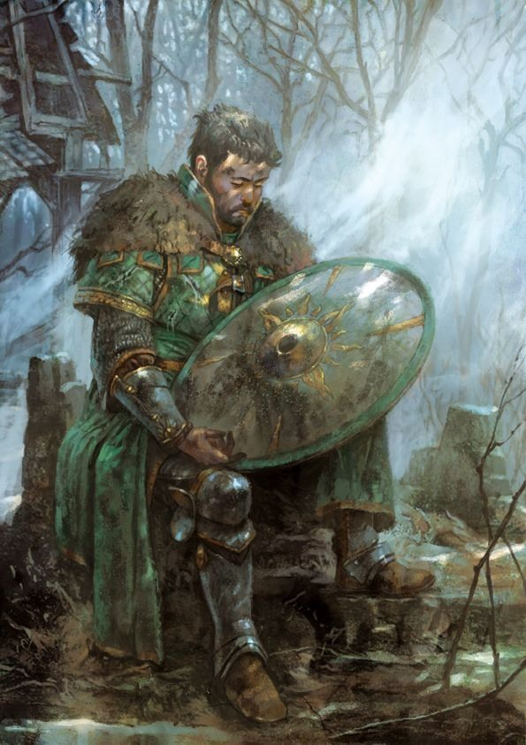

| Wystan Greymane | the Shieldwarden Lord of the Ridgewall Kharven, House Greymane of the Stormfold as of the gatehouse at Kharven’s Foot, the morning he swore the house to the Tokenless and rode south beside Ulf Stark |
| Epithet | the Shieldwarden, by title before name, as the house requires |
| Concept | Nothing gets past him, not a blow and not a secret, and when he finally moves he only needs to once. |
| Stat line | Stage VI Glory · Expert (Faceted) Level 180 · Refined · Wallkeeper Body VI Mastered, I · Fate V Walked 30%, not yet read · Spirit Studied 5%, not yet read · Lenses: home |
| Combat grammar | Shield and sword; the wall first, and then very fast |
| Aura and sound | slate gray with a dull gold edge, like the ridge with the dawn behind it · sound: a hunting horn, one long note, from very close |
| How he moves | Long and unhurried, at the Greymane stride, until he reaches the place he means to hold, and then he does not move at all. |
| Stack | sustainable mean of 106.25 in Vitality; 100 in Resilience (at the very top of its step), 81.25 in Dexterity and 85.7 in Dominion cap two steps on the hidden scale over the sustainable figure (to 400 on Vitality, 275 on the rest) |
| Bonded weapon | none; the old sun belongs to the post, not to the man |
| Kit | an old green surcoat worked in gold over mail and half plate, a fur mantle and a long gray cloak, a hunting horn at his belt, and the piece people talk about first: a Very Rare round shield with a gold sun half worn off it |
| Voice | ”We are the keepers of the wall. We are the shields of the innocent. We stand on the ridge so that nobody behind us has to.” speaker type: an old wall-lord who says very little, and then says the thing everyone else was afraid to |
| Field | Value |
|---|---|
| Full Name | Wystan Greymane |
| Pronunciation | WIS-tən GRAY-mayn |
| Titles | The Shieldwarden, by title before name, as the house requires · Lord of the Ridgewall · one of the Seven Warlords of the north |
| Age | Sixty-one when he died |
| Family | Godfrey Greymane, his son, the Shieldwarden after him Amelia Greymane, his daughter, later Lieutenant of the Shieldwardens Aldwin Greymane, his brother, who came home to him in a salt-cart with a ransom tag on his collar his wife, who died the autumn after he rode south, and lies on the ridge |
| Realm / Faction | House Greymane of the Ridgewall and the Stormfold, holding the western ridgeline against Undaar-Keth; with Ulf Stark against Kagenori Tenrai Moto’s martial law on the Kessen road |
| Refusal | He would not give the boy the answers; if they gave him all the answers they would take the war away from him |
| Conviction | The ridge does not move |
| Field | Value |
|---|---|
| Class | Wallkeeper, the soul’s name for a man who has stood on one wall looking one way for so long that the wall has gone into him; a garrison sergeant’s class, a dozen to every border fort, and the Greymanes think that is exactly the right size for a lord · gives: the skill Holding the Shield, a good deal older in him than the name · shapes: his points fall to the body that stays where it is put and the feet that will not step, and few to anything thrown · evolved from: nothing yet; it is the first name his soul offered, at Glory, and it evolves as his Body Mastery rises |
| Mastery | Body I, Muridic: the lead, at Glory’s ceiling; his Traits work at it · Fate, Walked, and Spirit, Studied: behind a lead of I, and not yet read |
| Level | 180; it holds Glory (115) and would hold Refraction (130), and no Residual Strain builds in him short of 200 |
| Primary | Total |
|---|---|
| Vitality | 850 |
| Ardency | 550 |
| Gnosis | 500 |
| Dexterity | 650 |
| Harmonics | 250 |
| Resilience | 800 |
| Tempering | 300 |
| Dominion | 600 |
| Pool | 4,500, all spent |
| Peaks | Fortitude and Anchoring; Reflex out of stillness; Command, the horn and the ram |
| Measure | Figure |
|---|---|
| EU Reserve | 532,550 EU |
| Flux Density | 35,000 EU/g |
| AU/s | 21,700 · empties in 24.54 seconds at full output |
Traits
Full accounts: Wystan Greymane — Abilities
Every Trait reads at his lead Mastery, Body I.
| Trait | Kind | Source | Path and Form | Gates | What it does | Limit | Tell | Cost | Counter | Numbers |
|---|---|---|---|---|---|---|---|---|---|---|
| KEEPERS OF THE WALL | Primary | — | — | — | While somebody stands behind him, nothing that reaches him moves him back a step; he looks west first, and then at you. (Primary Trait) | It faces one way; it is a wall, and a wall guards what is behind it and nothing else. With nobody behind him the step is gone and he is a strong old man with a good shield, and a blow from the flank or the rear meets no wall at all. | His eyes go west, or to whatever he has been set to face, before they come to the man in front of him, because he is checking the post before he checks the threat. | Nothing, since nothing is made or thrown. | Come at what he isn’t guarding: go round, split him from the people he is covering, or put a second threat on the far side of them and make him choose. | No reserve; Anchoring and Fortitude one step high while he holds a line with someone behind it. |
| STILL, THEN FAST | Secondary | — | — | — | He stops moving altogether, so that there is nothing in him to read, and the first thing he does out of the stillness is quicker than he has any right to be. (Secondary Trait) | It is one move; after the first, he is only an old man of sixty-one with a sword, and winding it again takes real stillness, a few breaths of it, which nobody close enough to hit him will give him. | He stops moving altogether. | Nothing. | Never be the first to move. A patient man wastes it, a longer weapon can make him come forward out of it, and a false start he believes spends it as surely as a true one. | No reserve; the first move out of stillness one step quicker, once. |
| LATER, ULF | Secondary | — | — | — | One word, “Later,” and the thing he is keeping is as far out of reach as if the ridge stood in front of it. (Secondary Trait) | A silence cannot defend itself except by staying silent. He cannot explain, argue or lie his way round a question, because he does not lie; he can only decline it, and a declined question tells a sharp listener that there is something there. | ”Later.” | What keeping costs: he carried the boy’s name south with him and never got to say it. | Ask him in front of the one he is keeping it from; he will walk to the window instead, and the walk is an answer of a kind. | No reserve. |
Skills and Abilities
Full accounts: Wystan Greymane — Abilities
Skills
| Skill | Cues / mechanics | Learned where | Priced by (Sub-Stats) | Rank |
|---|---|---|---|---|
| Holding the Shield | rim level, boss to the blow, left foot forward, heels down; never the step back | the Ridgewall, from the cradle, and forty years of the passes | Anchoring, Fortitude | Journeyman |
| The One Answer | the sword out of the fleeced throat and along the opened line in one piece, from a body that showed nothing; then back behind the rim | the Ridgewall yard, and every Zettari who moved first | Reflex, Finesse | Apprentice |
| Horn and Line | one long note, which ridge men know from any other; when to send the foot, when to hold them, and where the file’s end must stand | the Greymane foot | Command, Pressure | Apprentice |
| Taking a Wall | the map and the count before anything else; the ram on its chains to the gate, ladders either side to split the defenders, the foot through behind | forty years of holding walls, which teaches how they fall | Analysis, Vigilance | Apprentice |
| Keeping Counsel | let the other man say all of it; one question, then the hard thing said once; what is not his to tell stays untold | his father’s table, and a long war beside the Starks | Analysis, Oath | Apprentice |
Techniques
| Technique | Kind | Mark | Source | Path and Form | Gates | What it does | Limit | Tell | Cost | Counter | Numbers |
|---|---|---|---|---|---|---|---|---|---|---|---|
| KEEPERS OF THE WALL | Signature art | — | — | Path Body, Mastered, for the wall, the stillness and the release; the Walked Fate for the silence, kept the way an oath is kept · Lens Fixatio for the release; the Fixatio is the house’s lens, carried in its drill, never harmonized by him, and fired at the away rate; the wall and the stillness are the house’s raising and his own soul’s habit, and no lens is written for them · Forms Shape (the wall and the release), Strike (the one answer), Bind (the silence) | none | Nothing gets past him, not a blow and not a secret, and when he finally moves he only needs to once | — | — | A wall faces one way and stays where it is: everything he has is paid for in not stepping, not turning and not telling. | — | — |
Releases
| Release | Kind | Mark | Source | Path and Form | Gates | What it does | Limit | Tell | Cost | Counter | Numbers |
|---|---|---|---|---|---|---|---|---|---|---|---|
| SETTING THE STONE | First Release | Mastered | Taught, on the Ridgewall, as every Greymane is taught it | — | — | “Stonefast.” Said aloud, low and level. His heels sink, dust and snow settle round his feet, the old sun takes the light, and every joint from the shield-boss to the heel becomes one column standing on the ground. (First Release, Greymane · Signature) | The feet: set, he cannot step. | Dust settles round his heels. | About four percent of his reserve to set, near 21,300 EU. | The ones the house teaches its children to fear: pull him, and a column built to be squeezed has nothing to say to a pull; lift him, and there is no ground under the post; or fight him on ice, where the heels have no grip and the whole locked man slides like a dropped statue. | Call: called aloud as STONEFAST · to set: some twenty-five settings from a full reserve · to hold: for as long as he does not move his feet · Sound: one long hunting-horn note |
Physical Description
| Feature | Description |
|---|---|
| Build | He is long, all of him, long-legged and long-handed, with the Greymane stride and the Ridgewall stillness, and he looks a good fifteen years younger than he is. |
| Hair | His hair is dark and thick, cropped short and pushed up off his brow, and his beard is dark and cut close to the jaw. |
| Face and eyes | His face is long and weathered, the nose straight, the eyes deep-set and heavy-lidded and gray, and he keeps them down more than up. |
| Outfit | He wears an old surcoat of green worked in gold over a coat of mail, a fur mantle on his shoulders, plate at the shoulders and elbows and knees and greaves to the boot, and a long gray cloak; on his breast, worked in darker thread, the wolf’s head of his house. |
| How the shield and weapons are carried | He carries the old round Greymane shield, steel faced and green-rimmed, with a gold sun rising on it half worn off by sixty years of blows, and a sword at his hip and a hunting horn at his belt. |
Voice
| Field | Value |
|---|---|
| Speaker type | an old wall-lord |
| Notices first | the west, then the footing, then what nobody else in the room has seen |
| Sentence length | short; he says a thing once, and then a long speech when it matters |
| Contractions | always |
| Pet word | ”lad” |
| Habit | a long breath out through his nose before he says the hard thing; a dry, crooked smile that comes very seldom |
| Sample line | ”If we give him all the answers, Ulf, we take the war away from him. We take the pain of it. And it’s the pain that makes them.” |
Equipment
| Item | What it is | Grade | Rarity | Rung | Bonded |
|---|---|---|---|---|---|
| The old sun | round steel-faced Greymane shield, green-rimmed, older than his carrying of it | A | Very Rare | Fieldwinner | no; it belongs to the post |
| The Ridgewall sword | long straight sword at the hip | C | Rare | Wallbiter | no |
| The half harness | coat of mail under green quilted panels edged in gilt, plate at the shoulders, elbows and knees, greaves to the boot | C | Rare | Wallbiter | no |
| The surcoats, the mantle and the cloak | old surcoat of green worked in gold, a plain gray field surcoat, a brown fur mantle with a gold clasp at the throat, a long gray cloak | plain | Rare for the green, Common for the rest | — | — |
| The hunting horn | long curved horn of a Stormfold ram, at the belt | plain | Uncommon | — | — |
| Item | Stamp | Maker’s mark | Mass and balance | Against armor | Look | How shown off | Past owners | What people say |
|---|---|---|---|---|---|---|---|---|
| The old sun | Hallowed | the Ridgewall’s smith-stamp inside the rim | about eight kilograms | — | steel over ash, domed, mottled gray and brown by sixty years of blows, the rim enameled ridge-green and chipped to the iron in a dozen places; a gold sun with long thin rays rising round a dark boss, half of it gone and the rest surviving only in the low places where nothing could reach it | he sits on a stone with it across his knee and works at a new scar with the ball of his thumb, and when he sets his heels the old sun seems to take the light | his father and his father’s father, Shieldwardens both | the Mandate’s ridge reports list it among the fortifications |
| The Ridgewall sword | Tempered | the Ridgewall’s stamp | about a kilogram and a half, balanced close to the guard | breaks Proofed harness and passes anything under it, fails against Tempered plate and up | gray steel, black grip, and as uninteresting as a smith could make it, on instructions; its one vanity is the scabbard’s throat, lined in waxed fleece so that the blade leaves it without a whisper | he doesn’t, and most people who have seen it out saw it once | — | old Stormfold men have watched him use it a dozen times, and none can tell you which hand moved first |
| The half harness | Tempered | inside the left shoulder | — | — | the plate gone brown-dark from years of iron and tallow, greased against the cold and never once polished, so that you smell it before you see it; domed knee-cops on old straps, the mail sleeves dull as river stones, the quilting worn pale along every edge | it fits him the way his own skin does, a long man’s harness made for nobody else | — | three kings’ agents have offered him better, and he looked west |
| The surcoats, the mantle and the cloak | — | — | — | — | both surcoats carry the wolf’s head of his house on the breast in darker thread; the green has gone bluish at the folds and black at the hem, its gold thread rubbed down to the core at the shoulders, and his wife mends it and nobody else is allowed he wears gray to fight in and on the march | he doesn’t | — | the green is older than Godfrey |
| The hunting horn | — | — | — | — | black at the tip and bone-gray at the bell, a band of tarnished silver at the mouth, the strap old green leather it says one thing, one long note, and ridge men know his from any other; it brought the Greymanes in through the gatehouse at the Foot | — | — | when you hear it close, you are already late |
Lore
Full account: Wystan Greymane — Lore
Ties
| Person | Who they are to him |
|---|---|
| Godfrey Greymane | his son |
| Ulf Stark | who rode south beside him |
| Muken Moto | the Tokenless, to whom he left the house |
| Aldwin Greymane | his brother |
| Kagenori Tenrai Moto | who summoned him |
| Sumie Kurenai | who carried the blade |